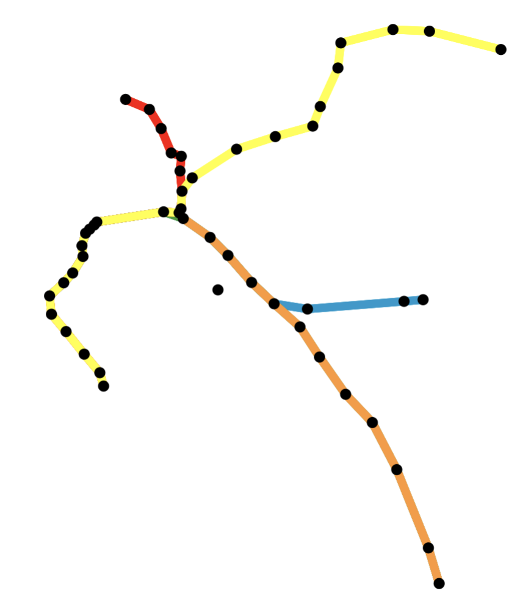

library(tibble)
greetings <- tibble(
greeting = c("Hello", "你好", "Hola", "Hei", "السلام علیکم"),
language = c("English", "Chinese", "Spanish", "Norwegian", "Urdu")
)6
R Packages II
Each of the following questions refer to the kknn package (https://github.com/KlausVigo/kknn) that we’ll be using for predictive modeling.
- What is the author’s one sentence description of this package?
- Which data sets are stored in this package?
- Unlike most packages, you’ve used, you can’t just type the name of a data set to see it (try it with
glass). Instead you first have to usedata(glass)to specifically load that data set. What is the name this property of a package? Does it exist in the DESCRIPTION file?
- What is the name of the file in the package that is edited to created the help files for these data sets?
Return to the tiny package that you made called greetr.
- Add the following tibble to the your package as a data set called
greetings.
- Document this data set using
roxygen2so that when a user types?greetingsat the console they see a description of the data set, its format (the columns and their values), and its source (you can cite STAT 133). Please transcribe your documentation below.
- Add documentation for your previous function called
hello(). Be sure to include a description, the arguments, the output, and an example of its use. Please transcribe your documentation below.
- One last item: bump your version number up by a small increment (say from 0.1.0 to 0.1.1) in the
DESCRIPTIONfile. Write that single new line from your DESCRIPTION file below.
Prediction II
Start by piecing together the code cells from the slides that use tidymodels to predict the price of diamonds using the value of carat. Put them into an .r script or Quarto document.
The following exercises have you investigate the different components of the code and make variations.
- Run all of the code and inspect the final data frame. As measured by RMSE (Root Mean Squared Error), which of the two models has better performance on the test set?
- Modify the code to add a third model to the mix: a KNN model with 50 instead of 15 neighbors. As measured by RSME, how does its predictive performance on the test set compare to the original two models?
- What is the purpose of the
initial_split()function? What is the type of the R object that it creates? What is the first element in that object and what does it represent?
- What does the
trainingfunction do? What is the type of the R object that it creates?
To understand the effect of the different steps of the data preparation recipe, make a duplicate of that pipeline and change the name of the result to
transformed. Add two more functions to the pipeline:prep()andbake()1. Each beyond the piped recipe object, each one takes a data frame as an argument: use the training data.Compare
transformed_traintodiamonds_train. What changes have been made to the data as a result of this recipe?
- Add two additional predictors to the recipe:
depthandtable2. What do these variables represent about diamonds?
- Rerun your original three models with this modified recipe. How does the predictive performance of each model on the test set compare?
Classification
Start by piecing together the code cells from the slides that use tidymodels to predict the species (Gentoo or Adelie) of penguins using the value of body_mass_g. Put them into an .r script or Quarto document.
The following exercises have you investigate the different components of the code and make variations.
- To build an understanding of the four metrics used to evaluate model performance, write four
dplyr(filter(),summarize(),mutate(), etc.) pipelines to calculate each metric manually fromad_gen_preds. Alongside each of the pipelines, write the English interpretation of each (e.g. “the proportion of ___ penguins that the model predicted to be ____”). Check your results against the values inall_metrics.
- Using the model that performed the worst, build a plot to understand where it made the errors. This should be a scatterplot with the predictor along the x-axis, the species along the y-axis, and points colored by whether it is a true positive, true negative, false positive, or false negative.
- Add two additional predictors to the recipe:
islandandbill_length_mm. Also add a third step:step_dummy(all_nominal_predictors()). What are the different values thatislandcan take?
- Repeat the prep and bake phases as in the last problem set to get a glimpse of what the training data would look like when all of the steps are applied. What happened to the
islandcolumn?
- Rerun your original three models with this modified recipe. How does the predictive performance of each model on the test set compare?
- Install the
kernlabpackage and read the help file fordata(spam). What is the natural response variable in this dataset? What do each of the predictors represent?
- Using the
spamdataset, create a classification model to predict whether an email is spam or not spam. You may use whichever predictors you like and any model class (with any parameters). Use a 70/30 train/test split and evaluate the model using the same four metrics as in the penguin example. What is the highest you were able to get your test accuracy?
APIs I
Revisit the homepage for the BART Legacy API discussed in Lecture.
https://www.bart.gov/schedules/developers/api
- What is the public key that can be used to access data through the legacy API?
Next visit the documention site: https://api.bart.gov/docs/overview/index.aspx. Note that each category of data has its own endpoint / base URL, and all takes a similar format (e.g. for estimated departure data use https://api.bart.gov/api/etd.aspx.)
- Provide the URL that will query the API for a list of all BART stations in JSON format.
- Provide the corresponding shell/terminal command.
- Provide the corresponding R code that will perform the query and parse the JSON response into an R list object.
- Subset the list to to return a data frame that contains the station abbreviation, name, latitude, longitude, address, city, county, state, and zipcode for each station. Which county has the greatest number of stations?
- Provide the URL that will query the API for estimated departure times (ETDs) from the Downtown Berkeley Station in JSON format.
- Provide the corresponding R code that will perform the query and parse the JSON response into an R list object.
- Extract the elemented called
rootand then thestationelement within it. View the object using the data viewer. What type of object is it an what are it’s dimensions?
- Use the
unnest()function from thetidyrpackage to expand theetdlist-column. What are the dimensions of the resulting data frame?
- Use
unnest()again to expand theestimatelist-column. What are the dimensions of the resulting data frame?
- How long (in minutes) is the shortest estimated wait time for a train departing from Downtown Berkeley Station? Which destination does this train go to? For reference, what time is it now?
- Query the BSA (BART System Advisories) endpoint to retrieve the latest system advisory information. You’re welcome to use any method: web browser, command line, or R. What are the different bits of information that they provide through this endpoint?
- Optional Challenge: Use the data provided by the BART API to construct a map of the BART system showing the locations of all stations. You could make it interactive with leaflet or static like the one below.
